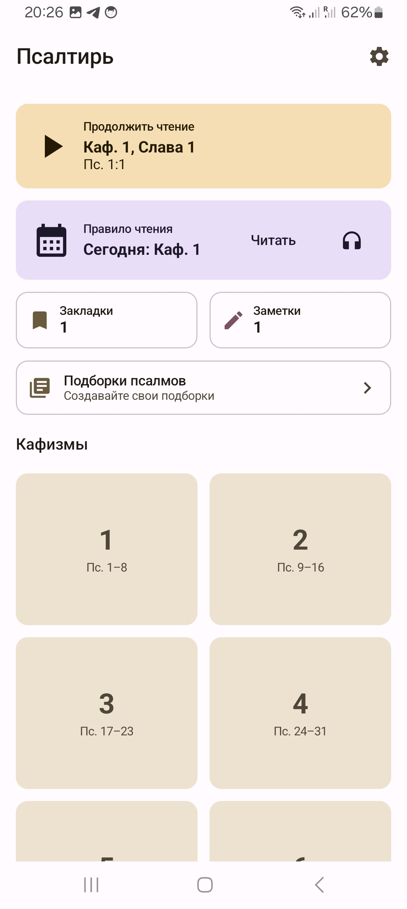
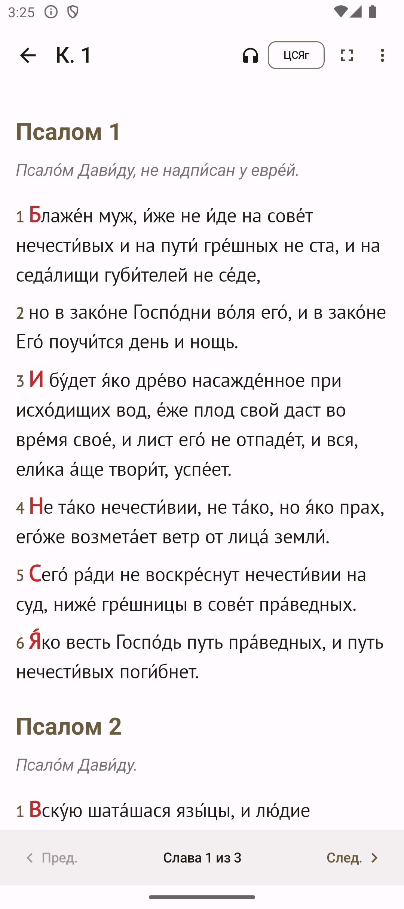
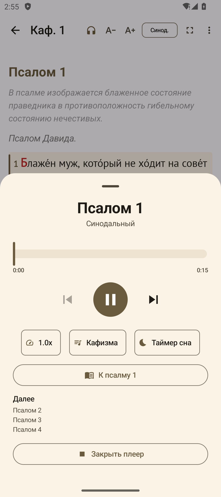
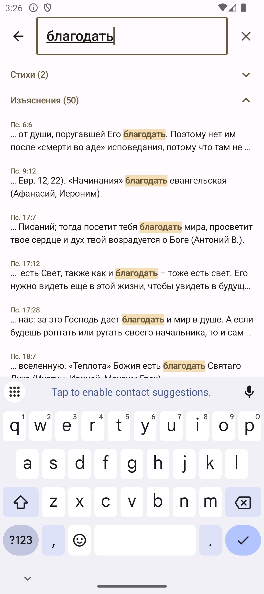
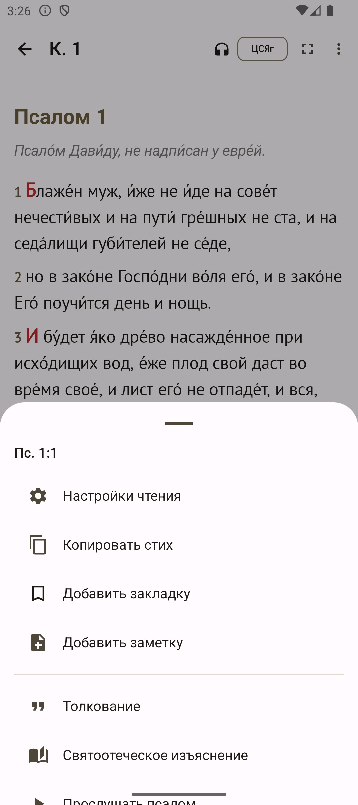
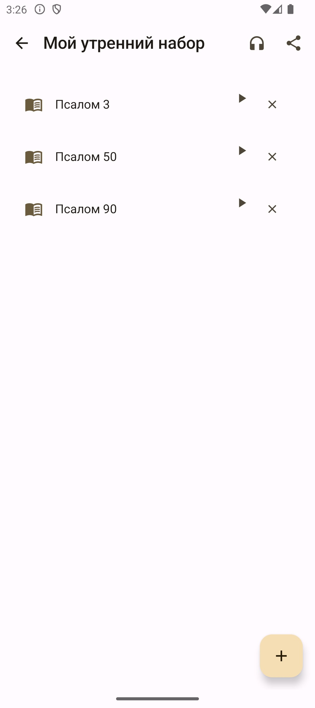
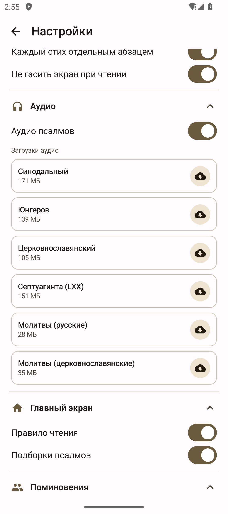
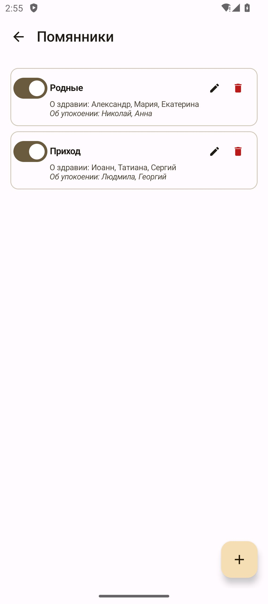

Версия 2.3.0 · Android 8.0+
Церковнославянский (традиционный и в привычном русском написании с ударениями), Синодальный с ударениями, перевод Юнгерова и греческая Септуагинта. Любой стих можно сразу увидеть во всех переводах рядом.
Под каждым псалмом — святоотеческое изъяснение и толкования от I до XX века: свт. Иоанн Златоуст, свт. Василий Великий, блж. Августин, прп. Ефрем Сирин, свт. Феофан Затворник, А.П. Лопухин и другие — всего более 78 авторов.
Можно не только читать, но и слушать. Плеер работает при выключенном экране, не мешает листать другие разделы, сам останавливается через заданное время.
Чтение Псалтири по кафизме в день — приложение само помнит, какая кафизма сегодня, и считает прочитанные круги.
Более 60 готовых подборок по наставлениям святых отцов и старинным молитвословам: покаянные, в скорби, при унынии, в болезнях, благодарственные и другие. Можно создавать свои.
К любому стиху можно добавить закладку или личную заметку. Случайно удалили — всегда можно вернуть.
Экран чтения делится на зоны: одно касание слева или справа листает страницу и переходит к следующей Славе на границе, верх и низ центра прокручивают страницу, центр включает полноэкранный режим. Удобно читать одной рукой.
Имена о здравии и об упокоении читаются сами после каждой славы. Можно завести несколько помянников — например, «Родные», «Крёстные», «Приход».
Отдельный режим чтения об усопших — со всеми положенными молитвами: Псалом 90, тропарь «Глубиною мудрости», поминовение имён между каждой славой, тропари покойные глас 4 и заупокойный отпуст. Текст и аудио на церковнославянском или русском.
Один поиск по всему: стихам всех переводов, толкованиям, святоотеческим изъяснениям и подборкам. Находит нужное, даже если набрали без ударений.
Семь тем на любой вкус: светлая, тёмная, сепия, глубокая чёрная (бережёт заряд), тема под обои телефона и своя собственная. Десять шрифтов, настройка размера букв и расстояния между строками.







